Parte 1 : Regressão
Introdução
Introdução
O que é Aprendizagem?
- Definição de aprendizagem: É uma mudança adaptativa no comportamento causada pela experiência.
- Praticamente todos os animais com sistema nervoso central são capazes de aprender (mesmo os mais simples).
O que é Aprendizagem?
-
O que significa para um computador aprender? Por que queremos que ele aprenda? Como fazemos para que ele aprenda?
- Queremos que computadores aprendam quando é muito difícil ou muito caro programá-los diretamente para executar uma tarefa.
- Fazemos o computador “programar a si mesmo” ao mostrar exemplos de entradas e saídas.
- Na prática, escrevemos um programa “parametrizado” e deixamos que o algoritmo de aprendizagem encontre o conjunto de parâmetros que melhor aproxima a função ou o comportamento desejado.
Definições Clássicas de Aprendizado de Máquina
Arthur Samuel (1959):
“Aprendizado de Máquina é o campo de estudo que dá aos computadores a habilidade de aprender sem serem explicitamente programados.”
Tom Mitchell (1997):
“Dizemos que um programa de computador aprende a partir de uma experiência \(E\), com respeito a alguma tarefa \(T\) e alguma medida de desempenho \(P\), se o seu desempenho na tarefa \(T\), medido por \(P\), melhora com a experiência \(E\).”
Definições Clássicas de Aprendizado de Máquina
-
\(T\) — Task (Tarefa): A tarefa que queremos resolver.
- Exemplos:
- classificar e-mails, prever preço de casas, detectar fraude
- Exemplos:
-
\(E\) — Experience (Experiência): Os dados utilizados para aprender.
- Exemplo:
- histórico de e-mails rotulados como spam ou não spam
- Exemplo:
-
\(P\) — Performance (Desempenho): Métrica usada para avaliar o modelo.
- Exemplos:
- acurácia, erro quadrático médio, AUC
- Exemplos:
Por que precisamos de Aprendizado de Máquina?
É muito difícil resolver problemas como o reconhecimento de objetos bidimensionais ou tridimensionais.
Não sabemos qual programa escrever, pois não sabemos exatamente como o cérebro realiza essa tarefa.
Mesmo que soubéssemos, o programa provavelmente seria extremamente complexo.
Exemplo: reconhecimento de dígitos manuscritos
Um exemplo clássico é o reconhecimento automático de dígitos escritos à mão.
A variabilidade na forma como cada pessoa escreve os números torna muito difícil criar regras explícitas de programação para identificar cada dígito.
Em vez disso, usamos aprendizado de máquina, que permite ao algoritmo aprender padrões diretamente a partir dos dados.
Exemplo: dígitos manuscritos (MNIST)

Por que precisamos de Aprendizado de Máquina?
A abordagem de aprendizado de máquina
Em vez de escrever um programa manualmente, coletamos muitos exemplos que especificam a saída correta para uma determinada entrada.
Um algoritmo de aprendizado de máquina produz um programa a partir desses dados.
O programa produzido por um algoritmo de aprendizado pode ser muito diferente de um programa típico escrito manualmente.
Se fizermos isso corretamente, o programa funciona para novos casos, além daqueles usados no treinamento.
Observação importante
Grandes quantidades de computação e dados hoje são mais baratas do que pagar alguém para escrever um programa manualmente.
Programação Tradicional vs Aprendizado de Máquina
Programação tradicional
Nós escrevemos explicitamente as regras.
Entrada + Regras → Saída
Exemplo:
- Entrada: dados de um cliente
- Regras: lógica escrita pelo programador
- Saída: decisão do sistema
Aprendizado de máquina
O algoritmo aprende as regras a partir dos dados.
Entrada + Saída → Algoritmo → Modelo
Exemplo:
- Dados: histórico de clientes
- Respostas: compra / não compra
- Modelo aprendido: sistema de previsão
Diferentes Tipos de Aprendizado
Aprendizado Supervisionado
Entrada → Saída conhecida
Exemplos:
- classificação de imagens
- previsão de preços
- detecção de spam
Aprendizado Não Supervisionado
Somente entradas disponíveis
Objetivo:
- descobrir padrões ocultos
- identificar grupos
Exemplos:
- clusterização
- redução de dimensionalidade
Aprendizado por Reforço
Agente interage com um ambiente
Componentes:
- estado
- ação
- recompensa
Exemplos:
- robôs
- jogos
- veículos autônomos
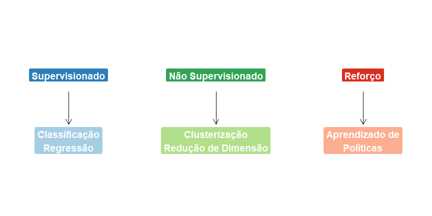
Aprendizado Supervisionado
Notação e Suposições
No aprendizado supervisionado, dispomos de um conjunto de treinamento:
\[ \{(x_1, y_1), (x_2, y_2), \ldots, (x_n, y_n)\} \]
onde:
- \(x_i = (x_{i1}, \ldots, x_{id})\) representa as variáveis explicativas
- \(y_i\) representa a variável resposta observada
A partir dos dados de treinamento, queremos aprender uma função \(g(\mathbf{x})\) capaz de prever a resposta para novas observações.
👉 Quando \(Y\) é quantitativa, buscamos aproximar a função de regressão
\[ r(\mathbf{x}) = \mathbb{E}[Y \mid X = \mathbf{x}] \]
que descreve a relação entre
- uma variável resposta \(Y \in \mathbb{R}\)
- um vetor de covariáveis
\[ \mathbf{x} = (x_1,\ldots,x_p) \in \mathbb{R}^p \]
Formulação do aprendizado estatístico
Uma forma comum de representar o problema é
\[ Y = r(\mathbf{x}) + \varepsilon \]
onde:
- \(r(\mathbf{x})\) é a função verdadeira desconhecida
- \(\varepsilon\) representa ruído aleatório
- \(\mathbb{E}[\varepsilon \mid X] = 0\)
O objetivo do aprendizado supervisionado é estimar (treinar) uma aproximação
\[ g(\mathbf{x}) \approx r(\mathbf{x}) \]
Predição versus Inferência: Por que estimar f(x)?
Exemplo 1.1 — Expectativa de vida e PIB per capita
Considere dados de 211 países no ano de 2012, contendo:
- PIB per capita
- expectativa de vida
Uma pergunta natural é:
Como podemos usar esses dados para estabelecer uma relação entre essas duas variáveis?
Objetivo
Queremos usar os dados para estimar a expectativa de vida de um país quando seu PIB per capita é conhecido.
Formalmente, queremos estimar
\[ \mathbb{E}[Y \mid X = x] \]
onde
- \(Y\) = expectativa de vida de um país
- \(X\) = PIB per capita
Interpretação da função de regressão
A quantidade
\[ \mathbb{E}[Y \mid X = x] \]
representa a expectativa de vida média esperada para países com PIB per capita igual a \(x\).
Estimando essa função podemos:
- prever expectativa de vida a partir do PIB per capita
- investigar a relação entre as variáveis
- testar a hipótese de que não existe relação entre elas
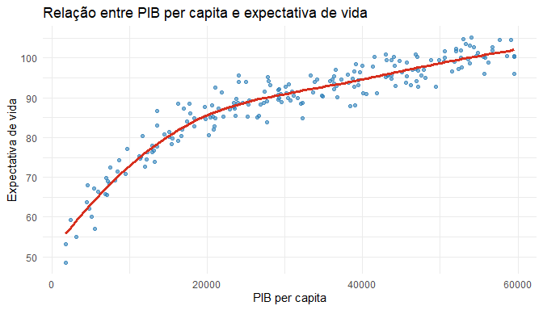
Predição versus Inferência: Por que estimar f(x)?
Exemplo 1.2 — Distância de uma galáxia até a Terra
Na cosmologia, uma variável extremamente importante é o desvio para o vermelho (redshift) de uma galáxia.
Esse valor mede quão distante a galáxia está da Terra.
O problema
O redshift pode ser medido com grande precisão por meio de espectroscopia.
No entanto:
- esse procedimento é caro
- exige muito tempo de observação
Por isso, surge a seguinte pergunta:
Podemos estimar o redshift utilizando apenas imagens das galáxias?
Formulação como aprendizado supervisionado
Considere uma amostra de treinamento
\[ (\mathbf{x}_1,Y_1),\ldots,(\mathbf{x}_n,Y_n) \]
onde
-
\(\mathbf{x}_i\) = imagem da \(i\)-ésima galáxia
- \(Y_i\) = redshift medido por espectroscopia
Objetivo
Queremos estimar a função de regressão
\[ r(x)=\mathbb{E}[Y \mid X=\mathbf{x}] \]
A partir dessa função podemos:
- prever o redshift de novas galáxias
- estimar suas distâncias até a Terra
Predição versus Inferência: Por que estimar f(x)?
Exemplo 1.3 — Isomap Face Data
Neste conjunto de dados, proveniente de Tenenbaum, Silva, and Langford (2000), o objetivo é estimar a direção para a qual uma pessoa está olhando.
-
Resposta (\(Y\)): direção do olhar
- Covariáveis (\(\mathbf{x}\)): imagem da face da pessoa
Formulação do problema
Uma forma de resolver esse problema é estimar a função de regressão
\[ r(x) = \mathbb{E}[Y \mid X = \mathbf{x}] \]
utilizando uma amostra de treinamento
\[ (\mathbf{x}_1,Y_1),\ldots,(\mathbf{x}_n,Y_n) \]
onde:
-
\(\mathbf{x}_i\) = imagem da face do indivíduo
- \(Y_i\) = direção do olhar
Predição em novas imagens
Depois de estimar a função \(r(\mathbf{x})\), podemos utilizá-la para
- prever a direção do olhar em novas imagens
- inferir a variável resposta \(Y\) a partir das covariáveis \(\mathbf{x}\)
Em outras palavras:
imagem da face \(\rightarrow\) modelo \(\rightarrow\) direção do olhar

Predição versus Inferência: Por que estimar f(x)?
Exemplo 1.4 — Predição do ano de lançamento de músicas
Os dados do YearPredictionMSD contêm diversas covariáveis sobre músicas do banco Million Song Dataset.
Alguns exemplos de variáveis:
- características de timbre
- energia da música
- dançabilidade
- outras características acústicas
Além disso, o conjunto de dados contém o ano de lançamento de cada música.
Formulação como problema de regressão
Considere
- \(\mathbf{x}\) = vetor de características da música
- \(Y\) = ano de lançamento
Queremos estimar a função de regressão
\[ r(x) = \mathbb{E}[Y \mid X = x] \]
ou seja, o ano esperado de lançamento dado o conjunto de características da música.
O que podemos fazer com esse modelo?
Uma estimativa de \(r(x)\) pode ser usada para:
- Predição
Prever o ano de lançamento de novas músicas a partir de suas características
- Interpretação
Investigar quais características musicais estão associadas ao ano de lançamento

Interpretação em aprendizado supervisionado
Temos uma amostra de treinamento
\[ (\mathbf{x}_1,Y_1),\ldots,(\mathbf{x}_n,Y_n) \]
onde:
- \(\mathbf{x}_i\) = características da música
- \(Y_i\) = ano de lançamento
O objetivo é aprender uma função \(g(x)\) capaz de prever o ano de lançamento de novas músicas.
Dois objetivos do aprendizado supervisionado
De modo geral, os problemas apresentados podem ser divididos em dois objetivos principais.
Objetivo inferencial
Perguntas típicas:
- Quais preditores são importantes?
- Qual é a relação entre cada preditor e a variável resposta?
- Qual é o efeito de mudar o valor de um preditor na variável resposta?
Esse tipo de análise busca interpretar a relação entre as variáveis.
Objetivo preditivo
Queremos construir uma função
\[ g : \mathbb{R}^p \rightarrow \mathbb{R} \]
com bom poder preditivo.
A ideia é encontrar uma função \(g\) tal que, para novas observações i.i.d.
\[ (X_{n+1},Y_{n+1}),\ldots,(X_{n+m},Y_{n+m}), \]
tenhamos boas aproximações
\[ g(x_{n+1}) \approx y_{n+1}, \ldots, g(x_{n+m}) \approx y_{n+m} \]
Duas culturas em modelagem estatística
Breiman (2001) argumenta que existem duas culturas no uso de modelos estatísticos (em especial modelos de regressão).
Data Modeling Culture
- Domina a comunidade estatística.
- O principal objetivo está na interpretação dos parâmetros.
- Testar suposições do modelo é fundamental.
Foco:
- Inferência
- Compreensão do mecanismo gerador dos dados
Algorithmic Modeling Culture
- Domina a comunidade de Machine Learning.
- O foco está em obter bons algoritmos preditivos.
- Os resultados podem ser interpretados, mas isso geralmente não é o foco principal.
Foco:
- Predição
- Desempenho em novos dados
Integração entre Estatística e Machine Learning
Machine Learning e Estatística não são opostos: são complementares.
Historicamente, as duas áreas enfatizaram objetivos diferentes:
- Estatística: foco em inferência e interpretação dos modelos.
- Machine Learning: foco em predição e desempenho em novos dados.
Tendência atual
Hoje muitos métodos modernos procuram combinar as duas culturas, buscando:
- alto desempenho preditivo
- interpretação dos modelos
Exemplos:
- Random Forest interpretável
- SHAP (Shapley Additive Explanations)
- modelos semiparamétricos: GAM (Modelos aditivos generalizados), Modelo de Cox (riscos proporcionais), etc.
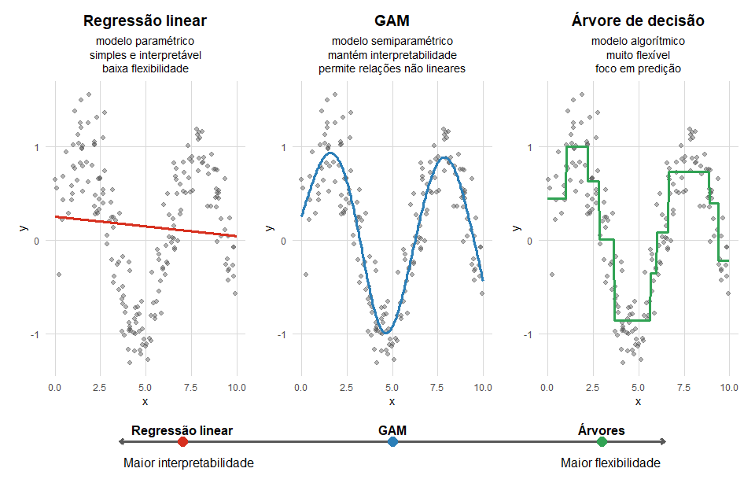
Interpretabilidade vs. Flexibilidade
Em modelagem estatística e aprendizado de máquina, frequentemente existe um trade-off entre interpretabilidade e flexibilidade.
- Interpretabilidade: facilidade de compreender como o modelo toma decisões.
- Flexibilidade: capacidade do modelo de capturar padrões complexos nos dados.
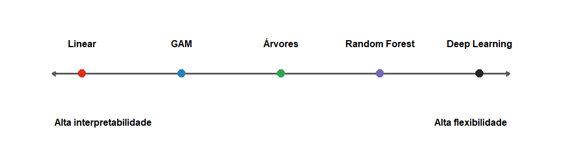
Modelos mais simples tendem a ser mais interpretáveis, enquanto modelos mais complexos tendem a ser mais flexíveis e capazes de capturar padrões não lineares.
Em muitos problemas aplicados, o objetivo é encontrar um equilíbrio entre interpretação e desempenho preditivo.
A Função de Risco
Para construir boas funções de predição, precisamos de um critério para medir o desempenho de uma função de predição
\[ g : \mathbb{R}^p \rightarrow \mathbb{R} \]
Em problemas de regressão, um critério muito utilizado é o risco quadrático, definido como
\[ R(g) = \mathbb{E}\left[(Y - g(\mathbf{x}))^2\right] \]
onde \((\mathbf{x},Y)\) representa uma nova observação, não utilizada para estimar \(g\). Quanto menor o risco, melhor é a função de predição \(g\).
O objetivo do aprendizado estatístico é encontrar uma função \(g\) que minimize esse risco.
Na prática, queremos encontrar
\[ g^* = \arg\min_g R(g) \]
Essa função é chamada de preditor ótimo.
Função de perda
Para avaliar a qualidade de uma função de predição \(g(\mathbf{x})\), utilizamos uma função de perda.
Uma escolha comum em problemas de regressão é a perda quadrática
\[ L(g(X),Y) = (Y - g(\mathbf{x}))^2 \]
Essa função mede o erro entre o valor observado \(Y\) e a predição \(g(\mathbf{x})\).
Outras funções de perda
Além da perda quadrática, outras funções de perda podem ser utilizadas.
Por exemplo, a perda absoluta
\[ L(g(\mathbf{x}),Y) = |Y - g(\mathbf{x})| \]
Diferentes funções de perda levam a diferentes critérios de ajuste do modelo.
O risco de predição
De forma geral, o risco de uma função de predição é definido como
\[ R(g) = \mathbb{E}[L(g(\mathbf{x}),Y)] \]
Ou seja, o risco corresponde ao valor esperado da função de perda.
O objetivo é encontrar uma função \(g\) que minimize o risco
\[ g^* = \arg\min_g \mathbb{E}[L(g(\mathbf{x}),Y)] \]
Em outras palavras, queremos um modelo que produza erros pequenos em média para novas observações.
Decomposição do erro de predição
Considere uma função de predição
\[ g : \mathbb{R}^p \rightarrow \mathbb{R} \]
O risco de predição sob perda quadrática é
\[ R_{pred}(g) = \mathbb{E}[(Y - g(\mathbf{x}))^2] \]
Este risco mede o erro médio de predição para novas observações.
Erro em relação à função de regressão
Lembre que a função de regressão é
\[ r(x) = \mathbb{E}[Y \mid X = \mathbf{x}] \]
Podemos então medir o erro do modelo em relação à função verdadeira:
\[ R_{reg}(g) = \mathbb{E}[(r(\mathbf{x}) - g(\mathbf{x}))^2] \]
Teorema
Sob perda quadrática,
\[ R_{pred}(g) = R_{reg}(g) + \mathbb{E}[\mathrm{Var}(Y|\mathbf{x})] \]
Demonstração
\[\small \begin{aligned} \mathbb{E}\left[(Y - g(\mathbf{x}))^2\right] &= \mathbb{E}\left[(Y - r(\mathbf{x}) + r(\mathbf{x}) - g(\mathbf{x}))^2\right] \\ &= \mathbb{E}\left[(r(\mathbf{x}) - g(\mathbf{x}))^2\right]+\mathbb{E}\left[(Y - r(\mathbf{x}))^2\right] +2\,\mathbb{E}\left[(r(\mathbf{x})-g(\mathbf{x}))(Y-r(\mathbf{x}))\right] \\ &=\mathbb{E}\left[(r(\mathbf{x}) - g(\mathbf{x}))^2\right]+\mathbb{E}\left[\mathrm{Var}(Y|\mathbf{x})\right] \end{aligned} \] em que o último passo segue do fato que (lei da esperança total)
\[\small \mathbb{E}\left[(r(\mathbf{x})-g(\mathbf{x}))(Y-r(\mathbf{x}))\right]=\mathbb{E}\left[\mathbb{E}\left[(r(\mathbf{x})-g(\mathbf{x}))(Y-r(\mathbf{x})) \mid \mathbf{x}\right]\right]=0 \]
e
\[\small \mathbb{E}\left[(Y-r(\mathbf{x}))^2\right]=\mathbb{E}\left[\mathbb{E}\left[(Y-r(\mathbf{x}))^2 \mid \mathbf{x}\right]\right]=\mathbb{E}\left[\mathrm{Var}(Y|\mathbf{x})\right], \]
pois \(\small r(\mathbf{x}) = \mathbb{E}[Y|\mathbf{x}]\).
Assim, o erro de predição pode ser decomposto em duas partes:
Erro de aproximação do modelo
\[ R_{reg}(g) = \mathbb{E}[(r(\mathbf{x}) - g(\mathbf{x}))^2] \]
mede o quão bem o modelo aproxima a função verdadeira.
Ruído irreduzível
\[ \mathbb{E}[\mathrm{Var}(Y \mid \mathbf{x})] \]
representa a variabilidade intrínseca dos dados, que nenhum modelo consegue reduzir.
Observação: risco condicional vs. risco esperado
A função de predição \(g\) pode ser entendida de duas formas.
Função fixa
Depois que a amostra de treinamento é observada, obtemos uma função de predição
\[ g = g_n \]
Nesse caso, tratamos \(g\) como fixa e avaliamos seu risco em uma nova observação \((X,Y)\):
\[ R(g) = \mathbb{E}\left[(Y-g(\mathbf{x}))^2\right] \]
Esse risco é chamado de risco condicional.
Quando \(g\) depende dos dados
Antes de observar a amostra, a função de predição ainda não está determinada.
Na prática, ela é construída a partir dos dados de treinamento
\[ (\mathbf{x}_1,Y_1),\ldots,(\mathbf{x}_n,Y_n) \]
Portanto, o modelo ajustado deve ser escrito como
\[ g = g\big((\mathbf{x}_1,Y_1),\ldots,(\mathbf{x}_n,Y_n)\big), \]
ou, de forma abreviada,
\[ g = g(\mathcal{D}_n), \]
onde \(\mathcal{D}_n\) representa a amostra de treinamento.
Como \(g\) depende da amostra, ele é uma função aleatória dos dados.
Nesse caso, podemos considerar a esperança também em relação à amostra de treinamento.
Assim, o risco esperado é a média do risco condicional sobre todas as possíveis amostras:
\[ \mathbb{E}_{\mathcal{D}_n}\left[R\big(g(\mathcal{D}_n)\big)\right] \]
Equivalentemente,
\[ \text{Risco esperado} = \mathbb{E}[\text{risco condicional}] \]
Interpretação
- O risco condicional avalia o desempenho de um modelo específico, já ajustado.
- O risco esperado avalia o desempenho médio do procedimento de aprendizado.
Ou seja:
- risco condicional \(\rightarrow\) garantia sobre uma função \(g\) específica
- risco esperado \(\rightarrow\) garantia sobre o algoritmo que constrói \(g\)
Exemplo
Suponha que o risco esperado da regressão linear em um problema seja igual a \(C\).
Isso significa que, em média, ao aplicar regressão linear a diferentes amostras provenientes da mesma distribuição e com o mesmo tamanho amostral, o risco condicional obtido será aproximadamente \(C\).
Seleção de Modelos: Super e Sub-Ajuste
Em problemas práticos, é comum ajustar vários modelos candidatos para aproximar a função de regressão \(r(x)\).
O objetivo é identificar qual modelo possui maior poder preditivo.
Exemplo: expectativa de vida e PIB per capita
Considere o problema de prever a expectativa de vida de um país a partir de seu PIB per capita.
A função de predição considerada é
\[ g(x) = \beta_0 + \sum_{i=1}^{p} \beta_i x^i \]
onde
\[ p \in \{1,4,50\} \]
Modelos considerados
Ajustamos três regressões polinomiais:
- modelo de grau 1
- modelo de grau 4
- modelo de grau 50
Os parâmetros \(\beta_i\) são estimados pelo método dos mínimos quadrados.
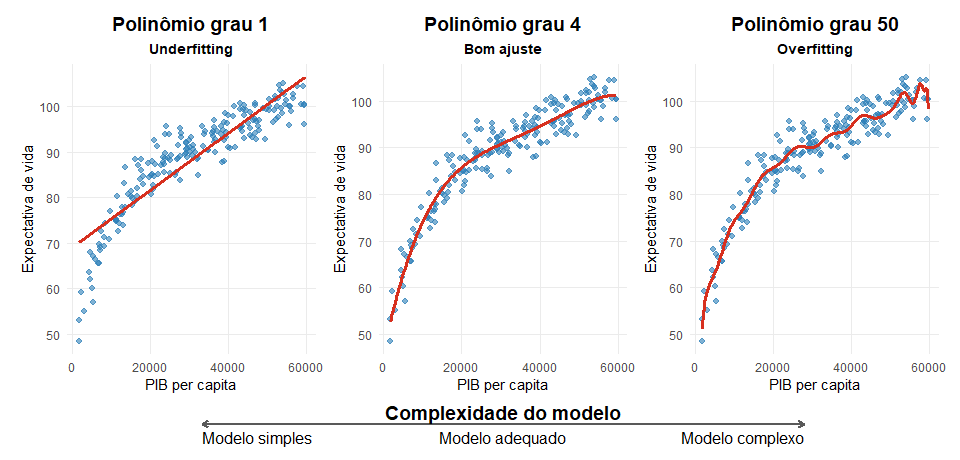
Comparação de modelos
O modelo de grau 1 é simples demais para capturar a relação.
O modelo de grau 50 é extremamente complexo e se ajusta demais aos dados.
O modelo de grau 4 oferece um compromisso razoável entre flexibilidade e estabilidade.
Underfitting e Overfitting
Sub-ajuste (Underfitting)
O modelo com \(p=1\) não captura bem o padrão dos dados.
Super-ajuste (Overfitting)
O modelo com \(p=50\) se ajusta demais à amostra observada e tende a produzir más predições para novos dados.
Objetivo
O objetivo é encontrar um modelo intermediário, que apresente bom desempenho preditivo.
Neste exemplo, gostaríamos de um método que escolha automaticamente \(p = 4\).
Seleção de modelos
O objetivo de um método de seleção de modelos é escolher uma boa função de predição \(g.\)
Para isso, utilizamos um critério que permita avaliar a qualidade preditiva da função.
Neste contexto, usamos o risco quadrático para medir a qualidade do modelo \(R(g).\)
Queremos então escolher uma função \(g\) dentro de uma classe de candidatos \(\mathcal{G}\) que apresente baixo risco quadrático.
Objetivo prático
Ao selecionar um modelo, queremos evitar:
-
sub-ajuste (underfitting)
- super-ajuste (overfitting)
Ou seja, buscamos um modelo com bom poder preditivo para novas observações.
Desafio
Na prática, o valor de \(R(g)\) é desconhecido.
Por isso, precisamos estimar o risco para avaliar e comparar as funções \(g \in \mathcal{G}.\)
Próximo passo
A questão central passa a ser:
Como estimar o risco de predição de um modelo?
Na próxima etapa, estudamos métodos para estimar esse risco e, assim, escolher o modelo mais adequado.
Data Splitting e Validação Cruzada
Risco observado
Uma forma natural de avaliar um modelo é medir seu erro nos dados de treinamento.
Esse erro é chamado de risco observado ou erro quadrático médio (EQM) no conjunto de treinamento:
\[ EQM(g) = \frac{1}{n}\sum_{i=1}^{n} (Y_i - g(\mathbf{x}_i))^2 \]
Interpretação
O \(EQM(g)\) mede o quão bem o modelo ajusta os dados observados
\[ (\mathbf{x}_1,Y_1),\ldots,(\mathbf{x}_n,Y_n) \]
Quanto menor o valor de \(EQM(g)\), melhor o modelo se ajusta à amostra de treinamento.
Problema
O risco observado é um estimador muito otimista do verdadeiro risco de predição.
Isso ocorre porque o modelo \(g\) foi ajustado utilizando os próprios dados de treinamento.
Consequência
Se utilizarmos apenas o erro de treinamento para escolher modelos, podemos obter:
- modelos muito complexos
- super-ajuste (overfitting)
ou seja, um modelo que se ajusta muito bem aos dados observados, mas apresenta baixo poder de generalização.
Minimizar apenas o erro de treinamento leva a erro de treino muito baixo mas erro de predição alto em novos dados.
Data splitting
Uma forma simples de estimar o risco de predição é dividir o conjunto de dados em duas partes: Treinamento e Validação
Por exemplo:
- Treinamento (70%)
\[ (\mathbf{x}_1,Y_1),(\mathbf{x}_2,Y_2),\ldots,(\mathbf{x}_s,Y_s) \]
- Validação (30%)
\[ (\mathbf{x}_{s+1},Y_{s+1}),\ldots,(\mathbf{x}_n,Y_n) \]
Etapa 1: Ajustar o modelo
Utilizamos apenas o conjunto de treinamento para estimar a função de predição \(g.\)
Por exemplo, podemos estimar os coeficientes de uma regressão linear.
Etapa 2: Avaliar o modelo
O conjunto de validação é utilizado apenas para avaliar o modelo.
Estimamos o risco através do erro quadrático médio no conjunto de validação:
\[ \hat{R}(g) = \frac{1}{n-s} \sum_{i=s+1}^{n} (Y_i - g(\mathbf{x}_i))^2 \]
Interpretação
Esse valor corresponde ao erro quadrático médio no conjunto de validação.
Como os dados de validação não foram usados para treinar o modelo, essa estimativa é mais próxima do verdadeiro erro de predição.
Ideia central
Treinamos o modelo com um conjunto de dados e avaliamos sua performance em dados não utilizados no treinamento.
Isso nos ajuda a detectar overfitting.
Escolha das amostras
Uma boa prática ao dividir os dados em treinamento e validação é fazer essa divisão aleatoriamente.
Para isso, utilizamos um gerador de números aleatórios para selecionar quais observações irão compor cada conjunto.
Por que fazer a divisão aleatoriamente?
A seleção aleatória evita problemas quando o banco de dados está ordenado de alguma forma.
Por exemplo:
- observações ordenadas por tempo
- observações ordenadas por renda
- observações ordenadas por região
Se não embaralharmos os dados, os conjuntos podem ficar enviesados.
Resultado teórico
Como os dados de validação não foram usados no treinamento, o estimador \(\hat{R}(g)\) é consistente para o verdadeiro risco \(R(g)\) pela Lei dos Grandes Números.
Interpretação
À medida que o tamanho do conjunto de validação aumenta,
\[ \hat{R}(g) \rightarrow R(g) \]
ou seja, o erro estimado converge para o verdadeiro erro de predição.
Problema: overfitting na validação
Se avaliarmos muitos modelos diferentes, podemos acabar escolhendo um modelo que se ajusta bem ao conjunto de validação por acaso.
Isso gera super-ajuste ao conjunto de validação.
Consequência:
- o modelo escolhido pode ter bom desempenho na validação, mas não generalizar bem para novos dados.
Treinamento vs. Validação vs. Teste
Uma prática comum é dividir os dados em três partes:
- Treinamento → ajustar os modelos
- Validação → escolher o melhor modelo
- Teste → avaliar o desempenho final
Interpretação
O conjunto de teste fornece uma estimativa do risco
\[ R(g) = \mathbb{E}[(Y - g(\mathbf{x}))^2] \]
para novas observações. Assim podemos avaliar se o modelo escolhido realmente generaliza bem.
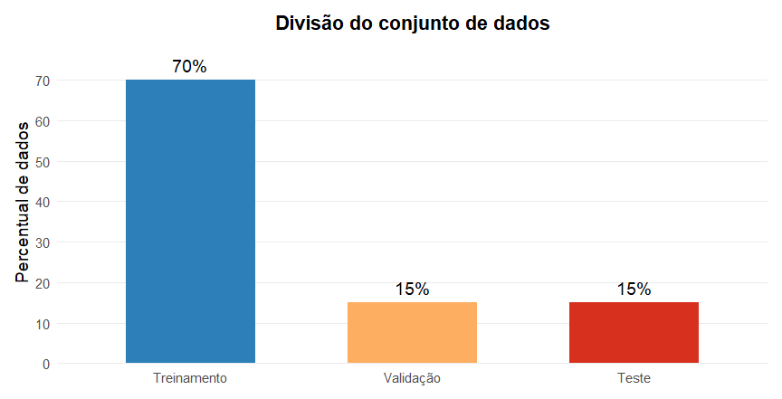
Validação cruzada
Uma variação desse método é a validação cruzada, que utiliza toda a amostra para avaliar o modelo.
Uma forma particular é o método leave-one-out cross validation (LOOCV).
Leave-One-Out Cross Validation (LOOCV)
No LOOCV, ajustamos o modelo n vezes.
A cada passo:
- removemos uma observação do conjunto de dados
- ajustamos o modelo com as outras \(n-1\) observações
- avaliamos o erro na observação removida
Estimador do risco
O estimador do risco no LOOCV é dado por
\[ \hat{R}(g) = \frac{1}{n} \sum_{i=1}^{n} (Y_i - g_{-i}(\mathbf{x}_i))^2 \] onde \(g_{-i}\) é o modelo ajustado sem utilizar a i-ésima observação.
Conjunto de treinamento em cada etapa
Para estimar \(g_{-i}\) utilizamos todas as observações exceto a i-ésima:
\[ (\mathbf{x}_1,Y_1),\ldots,(\mathbf{x}_{i-1},Y_{i-1}),(\mathbf{x}_{i+1},Y_{i+1}),\ldots,(\mathbf{x}_n,Y_n) \]
Ideia central
Cada observação é usada:
- uma vez para teste
- \(n-1\) vezes para treinamento
Assim, o LOOCV utiliza toda a informação disponível para estimar o erro de predição.
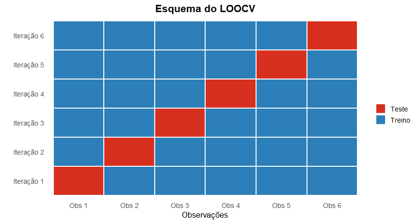
k-fold cross-validation
Uma alternativa ao LOOCV é o método k-fold cross-validation.
Nesse procedimento, dividimos o conjunto de dados aleatoriamente em \(k\) subconjuntos disjuntos chamados folds, com aproximadamente o mesmo tamanho.
Divisão em folds
Denotamos por
\[ L_1, L_2, \ldots, L_k \subset \{1,\ldots,n\} \]
os conjuntos de índices associados a cada fold.
Cada \(L_j\) representa um subconjunto de observações utilizado para validação.
Ajuste dos modelos
Para cada fold \(L_j\):
ajustamos o modelo utilizando todas as observações exceto as de \(L_j\)
obtemos uma função estimada \(\hat{g}_{-j}\) treinada sem as observações do \(j\)-ésimo fold.
Estimador do risco
O estimador do risco via k-fold cross-validation é
\[ \hat{R}(g) = \frac{1}{n} \sum_{j=1}^{k} \sum_{i \in L_j} (Y_i - \hat{g}_{-j}(\mathbf{x}_i))^2 \]
Interpretação
Cada fold é usado uma vez para validação e \(k-1\) vezes para treinamento.
Assim, utilizamos toda a amostra para avaliar o desempenho do modelo.
Relação com LOOCV
Quando \(k = n\) cada fold contém apenas uma observação.
Nesse caso, recuperamos o método Leave-One-Out Cross Validation (LOOCV).
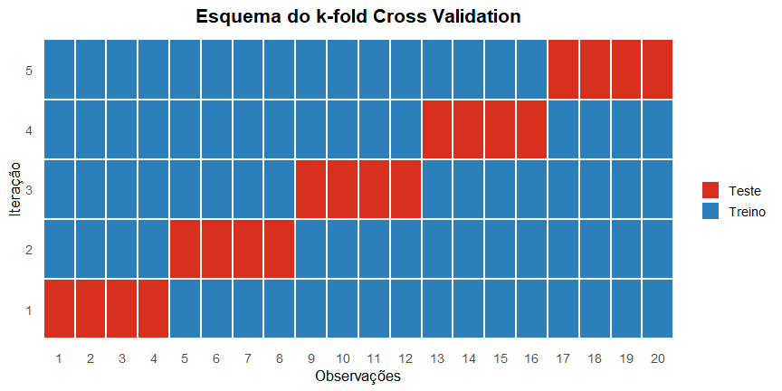
LOOCV e erro esperado
Uma propriedade importante do leave-one-out cross validation (LOOCV) é que ele é aproximadamente não viesado para o erro esperado do método de aprendizagem.
Ou seja, ele fornece uma boa estimativa do desempenho médio do modelo em novos dados.
Intervalos de confiança para o risco
Depois de escolher o modelo usando treinamento e validação, utilizamos o conjunto de teste para estimar o risco verdadeiro do modelo.
O conjunto de teste não foi usado para ajustar o modelo.
Estimador do risco no conjunto de teste
Denote por \((\tilde{\mathbf{x}}_1,\tilde Y_1),\ldots,(\tilde{\mathbf{x}}_m,\tilde Y_m)\) as observações do conjunto de teste.
Um estimador do risco é
\[ \hat R(g) = \frac{1}{m} \sum_{k=1}^{m} (\tilde Y_k - g(\tilde{\mathbf{x}}_k))^2 \]
Definimos
\[ W_k = (\tilde Y_k - g(\tilde{\mathbf{x}}_k))^2 \]
Assim,
\[ \hat R(g) = \frac{1}{m}\sum_{k=1}^{m} W_k \]
Interpretação
Se as observações do conjunto de teste são i.i.d., então \(W_1,\ldots,W_m\) são variáveis aleatórias independentes e identicamente distribuídas.
Logo, \(\hat R(g)\) é simplesmente a média dessas variáveis.
Aproximação normal
Pelo Teorema Central do Limite,
\[ \hat R(g) \approx \mathcal{N} \left( R(g), \frac{1}{m}\,\mathrm{Var}(W_1) \right) \]
quando \(m\) é grande.
Intervalo de confiança para o risco
Na prática, estimamos \(\mathrm{Var}(W_1)\) pela variância amostral:
\[ \hat\sigma^2 = \frac{1}{m-1} \sum_{k=1}^{m} (W_k - \bar W)^2 \]
onde
\[ \bar W = \hat R(g) \]
Um intervalo de confiança aproximado de 95% é
\[ \hat R(g) \pm 1.96 \frac{\hat\sigma}{\sqrt{m}} \]
Interpretação prática
O intervalo de confiança fornece uma medida de incerteza da estimativa do risco.
Isso permite avaliar:
- se o erro estimado é confiável
- se dois modelos possuem desempenho estatisticamente diferente
Um insight importante
A largura do intervalo de confiança é aproximadamente
\[ 4\sqrt{\frac{1}{m}\hat{\sigma}^2} \]
Portanto, quanto maior o conjunto de teste, menor a incerteza da estimativa do risco.
Escolhendo o tamanho da divisão
Podemos escolher o tamanho do conjunto de teste \(m\) de modo que a largura do intervalo de confiança seja menor que uma tolerância desejada \(\varepsilon\).
Ou seja, queremos
\[ 4\sqrt{\frac{\hat{\sigma}^2}{m}} \le \varepsilon \]
Resolvendo para \(m\), obtemos
\[ m \ge \frac{16\hat{\sigma}^2}{\varepsilon^2} \]
Interpretação
Esse resultado mostra que:
- quanto menor a precisão desejada (\(\varepsilon\) grande), menor pode ser o conjunto de teste;
- quanto maior a variabilidade do erro, maior deve ser o conjunto de teste;
- o erro estimado fica mais preciso à medida que \(m\) aumenta.
Consequência prática em Machine Learning
Treinar um bom modelo exige muitos dados, pois precisamos aprender a função de predição \(g\).
Por outro lado, estimar o erro do modelo exige relativamente menos dados.
Isso explica por que, na prática, usamos divisões como:
- 70% / 30%
- 80% / 20%
- 90% / 10%
entre treinamento e teste.
Exemplo: Seleção de modelo
Retomamos o exemplo Expectativa de vida vs PIB per capita.
Nosso objetivo agora é escolher o melhor modelo de regressão dentro da classe
\[ G = \left\{ g(x):\; g(x) = \beta_0 + \sum_{i=1}^{p} \beta_i x^i, \quad p \in \{1,2,\ldots,50\} \right\} \]
Ou seja, consideramos regressões polinomiais de diferentes graus.
Ideia do experimento
Para cada valor de \(p\):
- Ajustamos o modelo usando o conjunto de treinamento
- Calculamos o erro quadrático médio (EQM) no treinamento
- Calculamos o erro no conjunto de validação
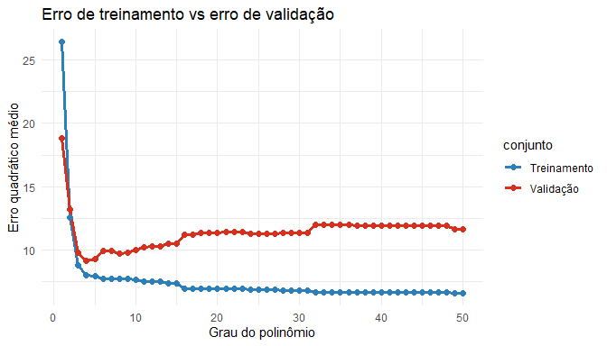
O que acontece no treinamento?
À medida que aumentamos o número de parâmetros \(p\):
- o modelo se torna mais flexível
- o erro de treinamento sempre diminui
Isso ocorre porque modelos mais complexos conseguem ajustar melhor os dados observados.
Problema: super-ajuste
Minimizar o erro no conjunto de treinamento não garante bom desempenho em novos dados.
Quando \(p\) é muito grande, ocorre super-ajuste (overfitting).
O modelo passa a capturar ruído do conjunto de treinamento.
Papel do conjunto de validação
O conjunto de validação fornece uma estimativa do erro de generalização.
Observamos que:
- o erro de treinamento continua diminuindo
- o erro de validação primeiro diminui e depois aumenta
Escolha do modelo
O modelo ideal é aquele que minimiza o erro no conjunto de validação.
Esse modelo fornece o melhor compromisso entre:
- flexibilidade
- capacidade de generalização.
Conclusão
Minimizar o erro no conjunto de validação leva a um modelo mais adequado para prever novas observações.
Esse procedimento é conhecido como data splitting para seleção de modelos.
Penalização: uma alternativa
Uma forma alternativa de estimar o risco de um modelo \(g\) é usar uma medida de penalização ou complexidade.
A ideia é que modelos muito complexos tendem a subestimar o risco verdadeiro quando avaliados apenas pelo erro no conjunto de treinamento.
Problema
O erro quadrático médio observado, \(EQM(g)\), tende a subestimar o risco verdadeiro \(R(g).\)
Essa diferença aumenta quando o modelo possui muitos parâmetros.
Ideia da penalização
A solução é adicionar uma penalização que mede a complexidade do modelo.
Assim, usamos um critério da forma
\[ R(g) \approx EQM(g) + P(g), \]
onde \(P(g)\) é uma função de penalização.
Medidas de penalização
Uma escolha simples para \(P(g)\) é usar o número de parâmetros do modelo.
Dois critérios muito utilizados são:
- AIC
\[ P(g)=\frac{2}{n p \hat{\sigma}^2} \]
- BIC
\[ P(g)=\frac{\log(n)}{n p \hat{\sigma}^2} \]
onde
- \(p\) é o número de parâmetros
- \(\hat{\sigma}^2\) estima \(\mathrm{Var}(Y|\mathbf{x})\).
Interpretação
Esses critérios equilibram:
- qualidade do ajuste
- complexidade do modelo
Modelos com muitos parâmetros recebem penalizações maiores. A penalização é uma forma de evitar overfitting.
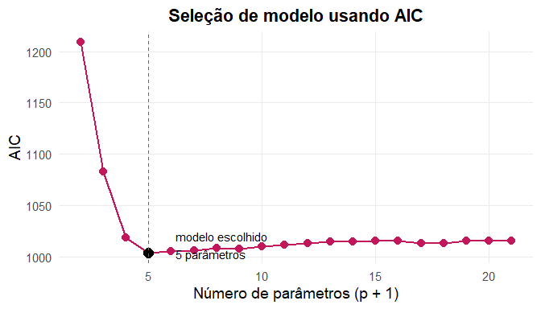
Balanço entre Viés e Variância
Decomposição do erro quadrático
Uma grande vantagem do erro quadrático é que ele possui uma decomposição muito interpretável.
Para um novo ponto \(\mathbf{x}\), o erro esperado pode ser escrito como
\[ \mathbb{E}\left[(Y - \hat g(\mathbf{x}))^2 \mid X = \mathbf{x}\right] = \mathrm{Var}(Y \mid X = \mathbf{x}) + \left(r(\mathbf{x}) - \mathbb{E}[\hat g(\mathbf{x})]\right)^2 + \mathrm{Var}(\hat g(\mathbf{x})) \]
Significado das quantidades
\(r(\mathbf{x}) = \mathbb{E}[Y \mid X = \mathbf{x}]\) é a função de regressão verdadeira.
\(\hat g(\mathbf{x})\) é o estimador aprendido a partir dos dados.
-
A aleatoriedade vem de duas fontes:
- o ruído em \(Y\)
- a amostra de treinamento usada para construir \(\hat g\).
Decomposição do erro
O erro esperado pode ser decomposto em três termos:
- Ruído irreducível
\[ \mathrm{Var}(Y \mid X=\mathbf{x}) \]
- Viés ao quadrado
\[ \left(r(\mathbf{x}) - \mathbb{E}[\hat g(\mathbf{x})]\right)^2 \]
- Variância do estimador
\[ \mathrm{Var}(\hat g(\mathbf{x})) \]
Interpretação
O ruído irreducível depende apenas da distribuição dos dados e não pode ser reduzido.
O viés mede o erro sistemático do modelo.
A variância mede o quanto o modelo muda quando o conjunto de treinamento muda.
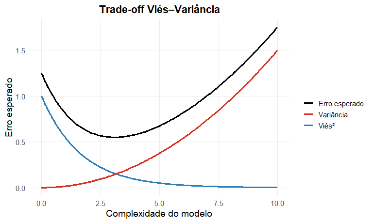
Trade-off viés–variância
À medida que a complexidade do modelo aumenta:
- o viés diminui
- a variância aumenta
O erro esperado é a soma de:
- viés²
- variância
- ruído irreducível
Assim,
modelos simples → alto viés, baixa variância
modelos complexos → baixo viés, alta variância
O melhor modelo equilibra viés e variância
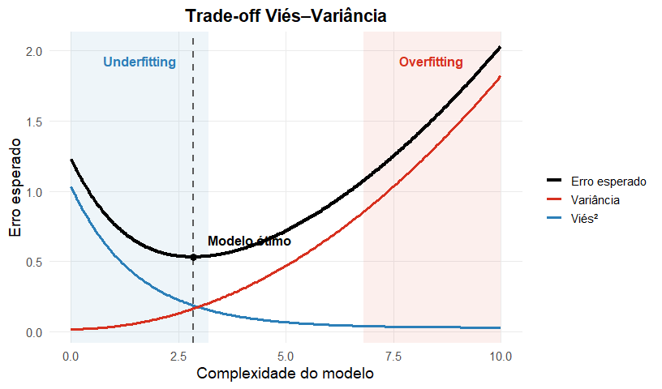
Parâmetros de sintonia (Tuning Parameters)
No exemplo anterior usamos regressões polinomiais
\[ g(x)=\beta_0+\sum_{i=1}^{p}\beta_i x^i \]
O parâmetro \(p\) (grau do polinômio) controla a complexidade do modelo.
Papel do parâmetro \(p\)
O valor de \(p\) controla o equilíbrio entre:
viés
variância
valores pequenos de \(p\) → modelo simples → alto viés
valores grandes de \(p\) → modelo flexível → alta variância
Escolhendo o valor de \(p\)
O valor ótimo de \(p\) depende de:
- o tamanho da amostra \(n\)
- a forma da função verdadeira
\[ r(x)=\mathbb{E}[Y|X=x] \]
Tuning parameter
O parâmetro \(p\) é chamado de tuning parameter.
- controla a complexidade do modelo
- não é estimado diretamente pelos dados
- precisa ser escolhido usando um critério de validação
Como escolher tuning parameters
Na prática, escolhemos esses parâmetros usando:
- data splitting
- validação cruzada (cross-validation)
O objetivo é selecionar o valor que minimiza o erro de predição em novos dados.
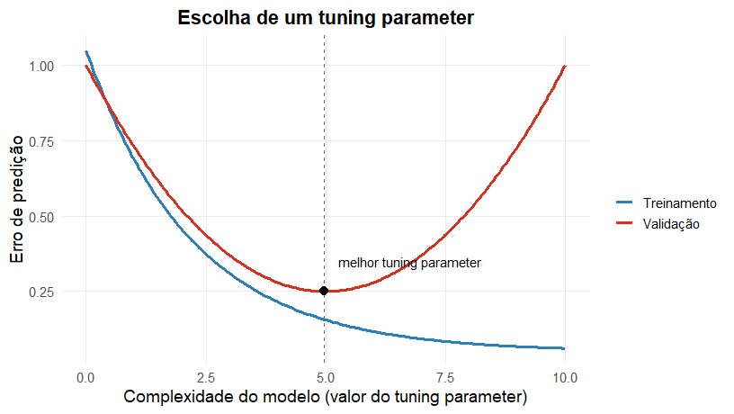